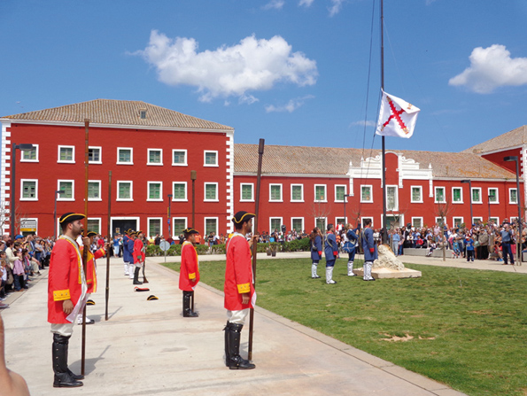

Es Castell, héritage britannique
 Es Castell se trouve a environ deux kilomètres de Maó, considéré comme le village le plus oriental de Minorque et donc d’Espagne. Situé à l’embouchure du port de Maó, entre Calesfonts et Cala Corb, Es Castell compte aujourd’hui 8 000 habitants. Le village est né dans l’ombre de la majestueuse fortification du Château de San Felipe (1555), dont l’origine de son nom “Es Castell ” qui est aujourd’hui en ruines. Une visite des galeries souterraines révèle la grandeur de cette fortification, convoitée par les grandes puissances européennes du XVIIIe. Le village a été fondé en 1771 sous la seconde domination anglaise (1763-1782). Es Castell ou Georgetown, comme les Anglais l’ont nommé lors de sa création, a été imaginé par le militaire écossais Patrick Mackellar, ingénieur (1717-1778). Le tracé du village répond parfaitement au modèle de l’urbanisme britannique de l’Illustration, basé sur l’uniformité et la régularité millimétrée propre à l’aménagement militaire de l’époque.
Es Castell se trouve a environ deux kilomètres de Maó, considéré comme le village le plus oriental de Minorque et donc d’Espagne. Situé à l’embouchure du port de Maó, entre Calesfonts et Cala Corb, Es Castell compte aujourd’hui 8 000 habitants. Le village est né dans l’ombre de la majestueuse fortification du Château de San Felipe (1555), dont l’origine de son nom “Es Castell ” qui est aujourd’hui en ruines. Une visite des galeries souterraines révèle la grandeur de cette fortification, convoitée par les grandes puissances européennes du XVIIIe. Le village a été fondé en 1771 sous la seconde domination anglaise (1763-1782). Es Castell ou Georgetown, comme les Anglais l’ont nommé lors de sa création, a été imaginé par le militaire écossais Patrick Mackellar, ingénieur (1717-1778). Le tracé du village répond parfaitement au modèle de l’urbanisme britannique de l’Illustration, basé sur l’uniformité et la régularité millimétrée propre à l’aménagement militaire de l’époque.
En 1782, le débarquement franco-espagnol obligea les troupes anglaises à se rendre face à la domination espagnole, pactée par le Traité de Versailles (1783). C’est à partir de ce moment que changea le nom d’origine du village, Georgetown, pour être remplacé par Real Villa de San Carlos, lui-même plus tard abrévié à Villa-Carlos, en mémoire au roi espagnol Charles III. C’est finalement en 1984 que lui fut attribué le nom populaire d’Es Castell, en référence au Château de San Felipe.
La grande esplanade ou place des armes était le point névralgique du village, entourée de magnifiques bâtiments militaires et de la mairie (1796). Ces régiments stratégiquement situés au cœur du village servaient de résidence aux officiers et aux troupes. Aujourd’hui comme à l’époque, ces majestueux bâtiments peints d’une couleur rougeâtre n’ont cessé d’impressionner les visiteurs qui entrent sur la place. Le tracé rectiligne d’Es Castell est considéré comme une architecture singulière aussi bien au sein même de Minorque que dans le reste de l’Espagne.
Calesfonts située dans l’ancien précipice sous le nom de s’Hort des Milord, a été et est encore aujourd’hui considérée comme la zone côtière la plus importante d’Es Castell. Elle doit son nom aux deux fontaines jaillissantes qui coulaient dans le ruisseau, situées près de la montée pavée menant au village.
Durant de longues années, cette rade du port a eu une grande importance dans le ravitaillement en eau des bateaux qui entraient dans notre île.
N’oublions pas de souligner la grande importance qu’a eu Calesfonts dans la construction des embarcations, elle avait lieu sur la petite place de la Cale.
Endroit, où les menuisiers de Ribera ont construit une grande partie de ce que l’on appelle bots palangrers, canots destinés à la pêche à la Palangre, originaires de Minorque, ils ont été utilisés par les pêcheurs de la zone Est pour pêcher au milieu des eaux de l’archipel.
Cala Corb garde son importance encore aujourd’hui, qui a son origine et au cours du XVIIIe siècle, avait pour fonction de donner refuge aux embarcations qui entraient au port et également d’approvisionner en eau l’escouade anglaise. Pour cette raison, avait été activée une source qui coulait en abondance. Malgré le temps qui passe, Cala Corb maintient le charme d’antan, il semble que le temps ici s’écoule plus lentement. Aujourd’hui, règne une certaine ambiance d’autrefois. Jusqu’à présent, l’intervention de l’homme n’a pas eu d’incidence sur le paysage et la physionomie de la Cale. En été, les rochers et les pierres de Cala Corb se couvrent de fleurs de câpres et on y continue de se baigner pour combattre la chaleur estivale suffocante.
Au début, Es Castell était un village de pêcheurs. En se promenant à Calesfonts et Cala Corb nous pouvons encore apercevoir des grottes, la plupart d’entre elles sont désormais transformées en restaurants, vestiges de cette activité de pêche et maritime. Les pêcheurs pratiquaient aussi bien la pêche côtière que la pêche hauturière, ils avaient la réputation de prendre des risques et être très aventuriers, ils s’éloignaient de la côte pour pêcher, allant parfois jusqu’aux côtes d’Alger. Les pauvres pêcheurs du village d’Es Castell, furent exposés à de fortes tempêtes et intempéries, beaucoup d’entre eux ont perdu la vie en mer, beaucoup d’autres ont succombé aux dures journées de travail auxquelles ils se soumettaient pour avoir de quoi manger et subsister.
 La Cala San Esteban, se trouve juste à l’entrée du port de Mahón, il se peut qu’elle doive son nom à l’arrivée des reliques du protomartyr San Esteban, apportées par le presbytère Orosio à Minorque depuis Jérusalem, comme nous le confirme la lettre de l’évêque Severo (418), premier document accréditant le christianisme aux Baléares. La Cala San Esteban est située dans la zone de Binissaida. À cet endroit, on peut admirer la splendide vue panoramique de l’entrée du port.
La Cala San Esteban, se trouve juste à l’entrée du port de Mahón, il se peut qu’elle doive son nom à l’arrivée des reliques du protomartyr San Esteban, apportées par le presbytère Orosio à Minorque depuis Jérusalem, comme nous le confirme la lettre de l’évêque Severo (418), premier document accréditant le christianisme aux Baléares. La Cala San Esteban est située dans la zone de Binissaida. À cet endroit, on peut admirer la splendide vue panoramique de l’entrée du port.
La Cala San Esteban a sûrement connu une forte activité portuaire pendant très longtemps, c’était le lieu stratégique le plus proche pour attaquer mais aussi pour s’abriter lors de fortes tempêtes et des longs trajets maritimes.
Les restes de la chaussée romaine ou médiévale témoignent encore aujourd’hui de l’importance d’un lieu qui connut une grande splendeur dans le passé.
Vous y trouverez le Fort de Marlborough construit par les Britanniques entre 1710 et 1726.
Cette forteresse doit son nom à John Churchill, Duc de Marlborough le général Britannique le plus important de son époque, elle est construite en son honneur. De nos jours, on peut visiter le Fort avec à l’appui un montage audiovisuel sur Minorque Britannique du XVIIIe siècle.
Quant à l'Eglise catholique et ses origines, il faut remonter aux étapes précédentes de la fondation de la ville née grâce à sa banlieue, toujours dans l'ombre du château de San Felipe. Lors de la construction du château (1555), comme il était de coutume à l’époque, une chapelle fut construite (1582), elle était destinée au culte religieux à l’intérieur de la forteresse.
Puis, une église fut construite dans le faubourg aux alentours du château, celle-ci dédiée à Notre-Dame de la Rose, comme la nommaient les anciens habitants et précurseur de l’église actuelle, était destinée au culte pour les familles des militaires de la forteresse. L’actuelle église Notre-Dame du Rosaire, d’architecture néo-classique, fut créée en 1777, lors de la seconde occupation anglaise, sous l’invocation de Notre-Dame du Rosaire, des saints : Saint-Georges (du côté anglais) et Santiago (Jacques) ou San Jaime (du côté espagnol).